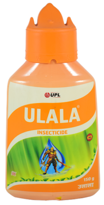

.jpg' )}})
{{pred_output}}
Bacterial blight is a disease caused by the bacterium , Xanthomonas citri pv.It starts as small , water-soaked lesions on the cotton bolls.The lesions of bacterial blight are triangular or rectangular.Bacterial blight lesions may appear on the upper leaf surface and the water soaked or greasy appearance of the lesions is often most clearly observed on the under surface of the cotton boll.Bacterial Blight maybe caused also by infected crop residue from previous season or be introduced by infected seeds.Infections maybe spread by wind-driven rain from an infested
Treatment :
- Destroy weeds or other pre-plant vegetation by tillage or herbicide application three or more weeks in advance of planting.
- Plant during the recommended window when possible
- use short or medium maturing varieties.
- Use drip irrigation and avoid watering foliage.
Recommended Products
Dose: 25-40 gm/Acre
Flonicamid 50% (Ulala) a systemic insecticide for controling the bacterium With the widest spectrum and longest duration of control.